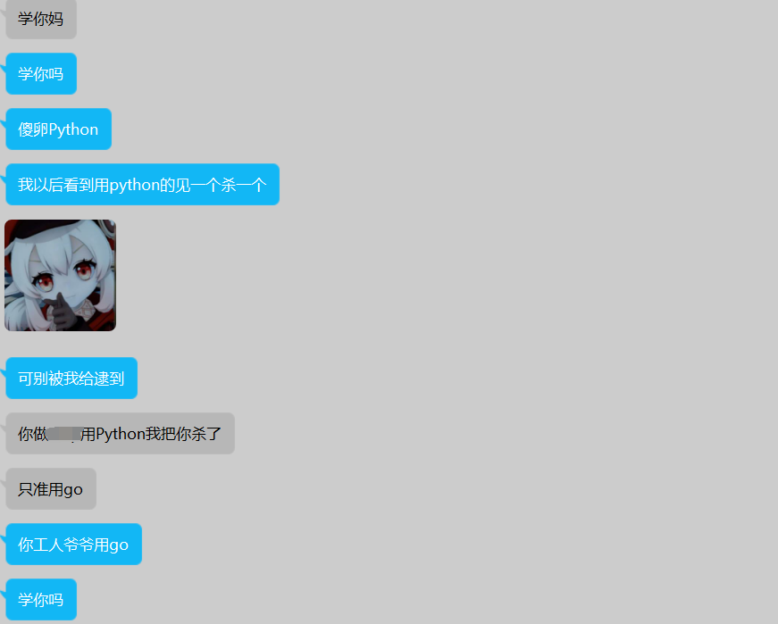
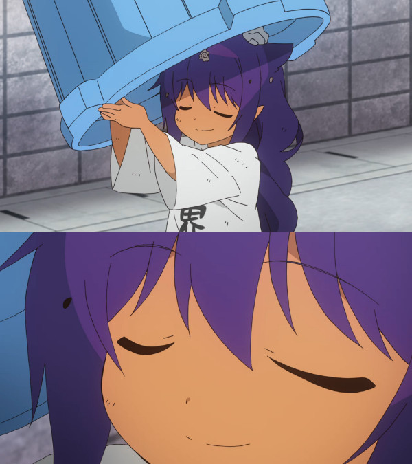
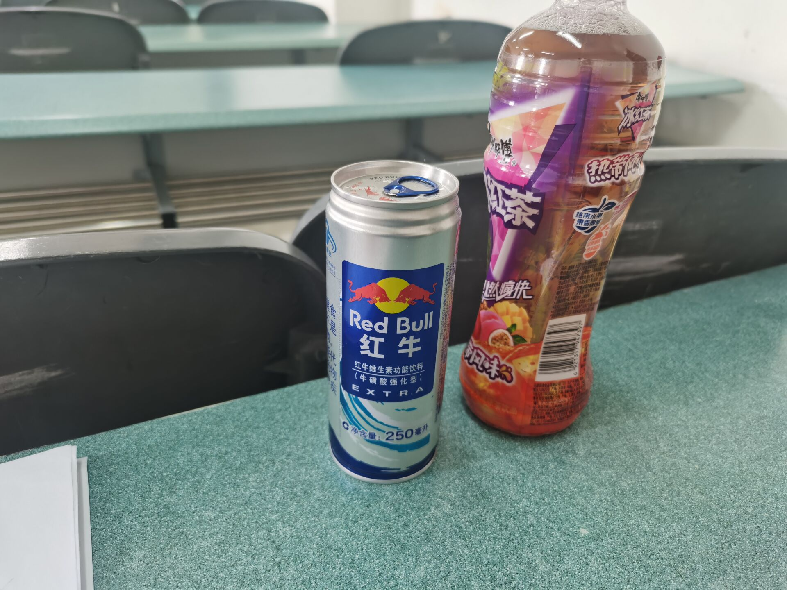
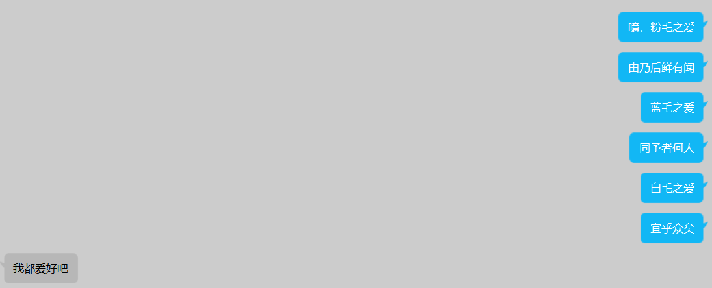
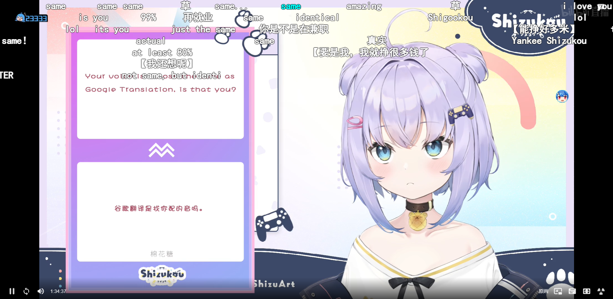

Fk Final Exam 1
0x01
1932.9.11
“我的稿子还没登出，妈的。”
1932.9.23
“早晨只是上班，坐得腚都痛了。”
1932.12.21
“说实话，看女人打篮球……是在看大腿。附中女同学大腿倍儿黑，只看半场而返。”
1933.4.29
“因为女生宿舍开放，特别去看了一遍。一大半都不在屋里。”
1934.3.13
“没作什么有意义的事——妈的，这些混蛋教授，不但不知道自己泄气，还整天考，不是你考，就是我考，考他娘的什么东西？”
哥们每学期期末的时候都会和季老先生达成跨越时代的共识
哥们其实还有和季老先生的共同点：他姓季，我感觉我期末要寄了
0x02
其实本不应该有这篇小作文
但是👴今天离散lab2没写出来，期末已经-5了
👴觉得自己不出所料的垃圾，没有任何特色的垃圾，悲痛欲绝，故作此篇
今晚做完带物实验回宿舍还得肝完cmu的lab，连抄带蒙找大爹来教人，实验课需要直视助教用👴拙劣的语言组织能力解释给他听
👴没做完离散lab2，lab3已经蠢蠢欲动要发下来了
👴没做完bomb lab，buffer bomb已经发下来了
👴刚打开线代课本，正在研究矩阵的绝对值，发通知说周末小测
👴说彳亍，大不了周六👴在CET4卷子上算满矩阵的绝对值
👴就算活过了上面的，在12月底前还得设计好俩verilog
今天的牛顿环还刺得👴眼睛疼
果然人倒霉起来是没有下限的
0x03
其实现在的情况很严峻
目前完全不会的有三门
- 带物
- CSAPP
- Mathematical Logic&Verilog
只要能涉及到一点点底层，👴就敢在课上划手机看漫画逛壁虎
辉夜最近崩了让👴很难受，悲惨经历再次+1
目前略懂的
- 离散
- 矩阵绝对值
这两门👴不需要开天辟地，过一遍知识点应该就能活下去了
半死不活要死不死非要吊一口气的
- 马原
- 带英
嘿嘿🤤画重点🤤嘿嘿🤤画重点🤤嘿嘿🤤画重点🤤嘿嘿🤤画重点🤤嘿嘿🤤画重点🤤嘿嘿🤤画重点🤤
求老师们大发慈悲考前给一次速通机会划重点罢，这ddl组合拳打下来谁吃得消
0x04
CET4前一晚受凉感冒瞬间引发扁桃体发炎，人在考场的时候已经感觉要升天了
不知道自己是怎么写完的，谢谢你 扁桃体
考试去了另一个校区，拍到了猫猫

然后就是吹牛逼看电影
看完之后的晚上吃了药结果病情又恶化了…咳醒四五次睡不着，看电子产品打发时间又眼睛疼，只能坐在床边思考人生
喉咙好疼，今晚还有个线代考试，摆了
周末生病消遣的活动只有听听歌练练打线了，反正现在的状态就是看书看不进去，看虚拟女人都觉得头疼
0x05
此时距离考试只有20天
20天准备7门考试还得正常上课
我谢谢你嗷 复习周也没一个是吧
Военный коммунизм
- 数逻CSAPP带物网课 能刷多快刷多快
- 刷题 书上没题就Google找题 能刷多少刷多少
- 离散和线代重心先放离散，线代最后考不着急
- SBR也看完了毫无牵挂 天生万物以养人
- 不要尝试理解这一切 这只是对记忆力的暂时考验罢了
0x06
2021.12.23 9:00AM
选课结束 python超了七十几个人 我选 n *
给python必修的人留条活路罢 这东西已经铁掉了
三门通识+一个抄mit6.不知道多少的cs课 学分第一次破30
下学期会死的 还要忙带创 真的会死的
2021.12.24 11:30PM
娘希匹 除了python掉了其他全中 甚至10个币中了个巨水通识 18个币中了画漫画 我谢谢你嗷
问了老师python不给加课 蛤蛤 必修的专业课给我掉咯 带三还不知道得撞几门专业课
python😭😭我的python😭😭python😭😭我的python😭😭python😭😭我的python😭😭python😭😭我的python😭😭python😭😭我的python😭😭python😭😭我的python😭😭python😭😭我的python😭😭python😭😭我的python😭😭python😭😭我的python😭😭python😭😭我的python😭😭python😭😭我的python😭😭python😭😭我的python😭😭python😭😭我的python😭😭python😭😭我的python😭😭python😭😭我的python😭😭python😭😭我的python😭😭
2021.12.26 9:00PM
我以后在学校看见同年级用Python的哈巴见一个杀一个，绝对不会有无辜的
学这种解释性巨慢无比的语言，👴不知道这东西有什么好学的，敲得快能当饭吃，啊？
感觉不如go…速度
傻卵Google就是不出gonum包，能不能橄榄一次python，能不能啊，啊？
go这种速度快的出个num包不是把python科学计算吃的死死的，臭屎

大学期间
必然要用go玩个爬虫出来
选上python的给👴爬
蛐蛐python 掉了就掉了 问题不大

或者说期末考试才是大问题😭
选上的一些应该算好玩的课
- 搓核弹：用C徒手搓一个操作系统，虽然没有GC但还是想用Go实现一个操作系统皮着玩🥰
- 漫画：球球老师能拿个鞭子好好的鞭挞我罢让我老实点每周都画一些
- 建模：带专期间怎么说也得比赛用到一次罢
- Python：没选上，我的评价是，这是任课老师的损失，就好像巴黎失去了埃菲尔，卢浮宫失去了蒙娜丽莎，月球失去了阿姆斯特朗的脚印，世界都暗淡无光，整个学校对美的追求也就只能到这个不上不下的层次，很难不认为是教育体制的失败
- 算法：爬
0x07
每天上课都不知道为了什么学这些玩意
这是授课，不是写论文，尤其是有些教材
说的就是你，清华大学出版社的C++程序设计，书写出来不是给读者看的，是给审校看的捏
让刚进大一的什么目的都没有给你学泰勒学傅里叶，鬼知道这些东西能用来干嘛，一天天的就干讲；现在大二了又有几个能想起来傅里叶变换的概念？
👴是个俗人，👴学东西就是为了用着玩，👴觉得玩不了的东西学了也没意义
👴还心理阴暗，👴觉得没有应用的知识没有存在的必要
现在知道傅里叶能用来做变声器了，然后呢？有时间研究具体实现了吗？
又被别的课程期末考试压得够呛，还想抽时间好好研究傅里叶，做梦呢
老师想讲应用那就没时间讲别的了，反正教学大纲给你扣死了，到时间就是得讲完，否则不想死也得死嗷
C不和计基一起教，图论不和算法一起教，计网数据库大头子给你拖到大三，再硬灌点物理学，物理实验除了考手抄报告字迹工整之外还有什么考察的地方，设备老化故障没人管，换别人的将就用用算了，实验做之前课还没教到呢搁着干讲操作，老师也不指望你能理解实验，到最后还不是各人找个相对来说能看看的数据互通有无。理论课真就灌水理论不从实际出发，人类各种学科发展到现在是觉得👴不知道出现这个概念就一定得有用吗天天做题做题做你妈了个巴子脱离了实践的东西，反正做到题就是函数连续就是光滑平面，到现在👴除了在线代上能看到一丢丢在CS的应用之外全都是放屁，写个行列式值计算的代码都难
上带学到底是为了干啥
虽然是脱裤子放屁，带火肯定都是为了操蛋的毕业证
但是不如想想带学图书馆里到底是什么情况：
- 虽然这个建筑叫图书馆，但是又有几个人是安安静静以读书为导向沉静下来阅读文学的
- 虽然这个建筑叫图书馆，但是有的人在桌子上书一摆，人一走。火已渐熄，然位不见王影：👴的书在，所以👴的神圣领土不可侵犯，工作人员打扫的时候收拾了👴还要发微博说绝绝子装无辜，今天又是在逃薛蟠的一天
- 👴对目前高校图书馆无人读书的现状感到绝望，但是👴更绝望的是👴这个时候也只能在图书馆刷题，不然👴的期末直接让👴变成超高校级绝望
上了带学之后，各位到底看过几本纯粹的文学类书籍？
天天被ddl拿鞭子抽还想看书？恶心完课内的，辅导员又发来一大堆哔哔莱莱的东西，至少👴现在学院的辅导员就是个无情的转发机器，什么消息都发，关键他自己啥都不看，唯一要做的就是从他们的大群里把消息转发到学生群，那👴为甚么不自己写个脚本连接学生群算了？👴手机离个半小时能发十几条完全无用的消息还占👴32GB的内存，说白了就是不敢担责呗，自己失去了甄别消息的能力只能让学生自己筛选，然后再让遗失重要信息吃过亏的学生一步步打磨成他们的样子
imouse割割的辅导员已经不想管imouse这种转专业的混乱邪恶臭狗了，所以👴到底是哪方面给了辅导员念想让他觉得👴是守序善良的？什么活动都想着👴期末不复习不看书不写题不看网课给你跨校区浪费四小时跋山涉水就为了给你签个字嗷？
也许能做到这种脱离客观现实和不知变通死守教条的等级也是个能力罢
上个带专是真累啊
哎，现在回过头想想下午写小作文的时候是真破防了嗷
果然能破防乐子人的从来都只有生活
0x08
12.26
新开这篇小作文，也为了督促自己期末多下些苦功。先要读完手边的CSAPP
12.27
看黑暗剑。
12.28
看黑暗剑。
12.29
Koui啊Koui！你怎么能如此堕落！
先前定下的学习计划你都忘了吗？
子曰：“吾日三省吾身。”
不能再这样下去了！
12.30
看黑暗剑。
0x09
CSAPP课平时摸得太透彻了，最后稀里糊涂老师送了一本CSAPP 这样就真的一本学习用一本收藏用了
我这学期对不起他 对不起图论老师 对不起Verilog老师 对不起所有专业课和公共课的老师和助教
为甚么平时能这么摆烂啊 凭什么啊
还有一周时间 就彻底寄了
大物和Verilog还是什么都不会
挂了算了 娘希匹
0x0A
这种复习量是真的应该存在于世界上的吗
想法是每天都拿2个小时看一门，合计12小时的清醒时间
但是2小时才够我预习带物一章，还要刷刷平时的作业题帮助理解又是起码一小时
Verilog已经寄了，根本没时间看，我日
算算看平时分，应该有45，期末需要考到40才能勉强及格，感觉有点难度
我不会真进去画个卡诺图就出来了吧卧槽
现在刚看完电学第一章
不写小作文就是看虚拟女人，不看虚拟女人又溜冰溜到mit的区块链网课
超，好想看这个课，毕竟学的这玩意就是区块链开发的主力，谢特，还有分布式
忏悔录：
我真的对不起我这学期碰到的每一个老师，也包括开源网课的老师
碰到的专业课老师都挺好的，怎么到我这个人身上就拉跨了呢
还有网课的老师，尤其是mit的那个线代老头
肉眼可见的能看到他对线代的热爱，哪怕是看他的线代网课都是我的荣幸
所以为什么在我身上拉跨了呢
我是傻逼
0x0B
完了完了完了完了
又摆了两天 这下只剩四天期末了
带物课又开了一本轻小说美滋滋看了一天，相对论和量子又寄了

买了破防茶和红牛，然后下午看小说根本不困…唯一的收获就是看了会图论第一章发现自己不会鸽巢定理，奖励晚上吃牛肉饭
再不看CSAPP就寄了啊…踏马的，汇编到现在都没懂啥意思
晚上回来和人聊及二刺螈发色xp问题

白毛之爱，宜乎众矣！
等我考完我一定要天天看蓝毛
润去萌娘看了眼词条
居然敢让师姐得心脏病和自杀，白鸟是什么三流网文作者……
反转了，师姐银定了，芜湖！
0x0C
为甚么知识点和我要写的题并没什么联系捏
和im0use割割下了下学期一定要好好学习的毒誓
（上学期和上上学期也发了誓）
还有两天就真枪实刀的干了，摸一会继续看光学和汇编吧
0x0D
ok 2022.1.9 还剩一天
今天主要看看汇编，把汇编和光学完结
离散只能明天看看后天裸考了，大英马基…寄
明天电磁学也得好好看看，好难受啊
逮到新的虚拟女人能d
无情的练听力机器：

0x0E
1.11
真出事啦
离散裸考已寄，马基裸考已寄
我甚至不理解我凭什么敢坐在那里丰富马克思主义学说
明天大物，决定不择手段
哪怕今晚熬夜背也得把公式进去默下来，tnnd
计基今天就看了点结构体对齐和联合体，CSAPP用的x86学校考试考的IA32…我特么做黑书例题看答案char*占八个字节没看懂，狗屎
1.12
考大物前看了一晚的相对论和量子物理
今天进考场仿佛爱因斯坦拿诺奖，然后看评委们不得不把诺奖给他还要当傲娇说给你是因为光电效应才不是因为你的相对论
然后试卷上只有4分的洛伦兹变换…
👴终究只是个🤡，其他全是电磁，默写个高斯定理和安培环路就直接下一题
原来我只不过是泡利羞辱的那一类人罢了
计基寄啦，下午刚考完，开开心心看虚拟女人小摆一晚，老师已经把分数改好了
只能说，每节课都坐第一排还当着老师面天天聊天吹牛逼、画画、打音游和逛京东摆烂一学期还能有70
和别人一起摆烂结果彻底寄了比较来说结果还彳亍，只是单纯的名落孙山罢了
昨晚被带物逼急了一罐红牛下去，两点才睡八点就考，早上六点的闹钟没闹醒，最后七点十分才醒没吃早饭润到考场
现在是一罐红牛下去但是明天无考试，想看数电但是红牛卵用没有，看了六小时直播眼皮已经重了
得改一改毫无进步的摆烂行为，可以接受摆烂，但是不能接受毫无目的和提升的摆烂
比如寒假摆烂k8s和安心力扣
计基复习阶段一直用的黑书…笑死，根本没有教材+笔记，PPT也是人家CMU的和考点没什么关系
但是复习的时候看黑书确实看的很爽，直接豁然开朗的感觉，书上的表格没有一个是冗余的，知识密度特别高，和im0use割割在外面期末安安稳稳预习的时候一上午能看接近10页，很舒畅（但是考点和黑书不能说求同存异，只能说毫不相干
比如今年摆烂摸鱼争取看完CSAPP，好好做做cmu之后的lab，课上已经做过的就摸了
1.14
我是臭鱼烂虾我是臭鱼烂虾我是臭鱼烂虾我是臭鱼烂虾我是臭鱼烂虾我是臭鱼烂虾我是臭鱼烂虾我是臭鱼烂虾我是臭鱼烂虾我是臭鱼烂虾
考到一半的时候老师走在我旁边看我化简卡诺图至少超过30s…然后我在那手抖把卡诺图和真值表全写错了捏
后面大题目要么没写要么没写完，很烦
所以我才讨厌底层…不考试的情况下这东西学着画着玩确实还🉑，但是一考试把时间压缩让我脑补各种码还要时序设计我就会④
然后一直摸到晚上七点才开始看看线代
至少线代不会挂科，但数电已经彻底寄了
1.15
定了个六小时的闹钟，十点睡，四点起来继续看矩阵绝对值，八点就开考
还好平时线代没怎么大摆，而且感觉学校教的也就二次型和规范型有点用，其他秩什么的都是给对角化二次型做的铺垫，单纯的一条线走下去就好了
学的也都根本不深入…几何空间根本不教就纯算呗
说实话，CS应该单独开俩学期线代专业课还要加上配套的lab才能让👴满意，要么就别给👴教这些肤浅的玩意要么就给👴讲彻底通透，就开个一学期的课讲的把人吊在这云里雾里就好像表白之后被女人挂着又不答应又不拒绝明摆着把人当天狗备胎一样恶心捏
感觉不是人过的日子，但是今天就能回家了捏
嘉然还有百万粉直播，好日子，要来力
1.16
到家咯
qnmd复习qnmd考试 我只想玩和fkall
qnmd学校 👴不待啦 回家直接当人见狗嫌的飞舞咯
0x0F
下面是👴寒假准备干的一些b事：
- 整k8s
- 看点3D数学，让imouse割割教👴md写数学公式
- 数据结构 链表
- 画
- 我是猫&洛丽塔
- 时间还嫌多就皮Linux